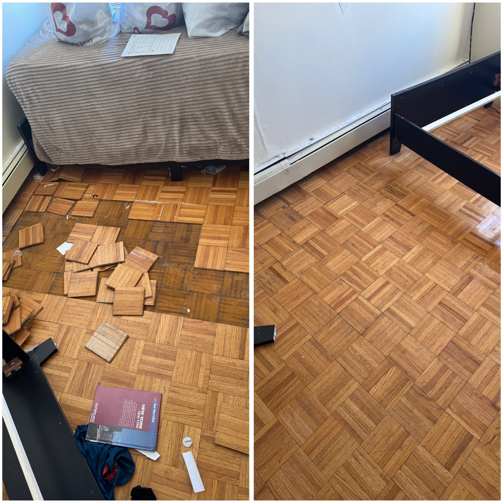
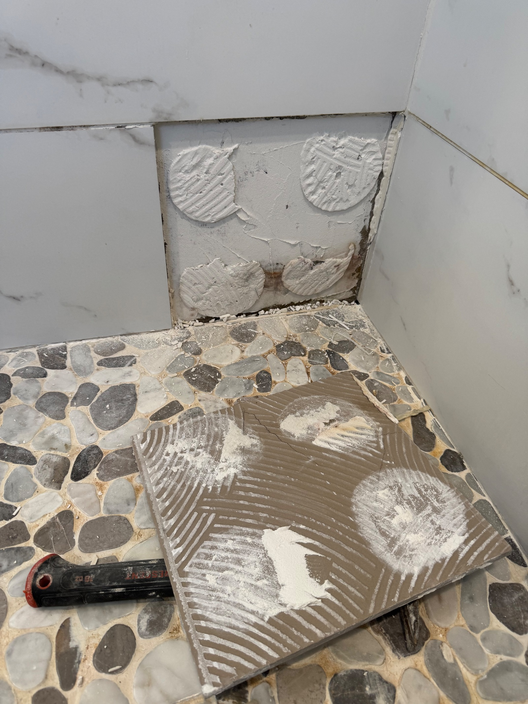

Complete Water Damage
Restoration Services
From burst pipes to roof leaks — we restore your property quickly and correctly.
Repair and replace water-damaged drywall, plaster, and ceiling tiles. We match existing finishes for seamless, invisible repairs.

Repair or replace water-damaged hardwood, tile, LVP & subfloor. We address the source of moisture before any floor replacement.
Complete drywall demo, replacement, taping, mudding, skim coat and paint. We restore damaged walls to better than pre-loss condition.

We work with certified mold remediation specialists and handle all post-remediation reconstruction and finishing work.

Water damage gets worse by the hour. We dispatch same-day across all NYC boroughs to assess damage and start repairs immediately.

We provide detailed written estimates and documentation to support your insurance claim. Experienced working with all major NYC insurance providers.

Leaking shower pans and cracked floor tile let water seep into subfloors and the ceilings below. We rebuild shower floors, re-waterproof and re-tile to stop hidden leaks for good — in homes and businesses alike.

Failed grout, loose tile and water-stained shower walls let moisture spread behind the surface. We strip, waterproof and re-tile shower walls so leaks don't travel into adjoining rooms — residential and commercial.